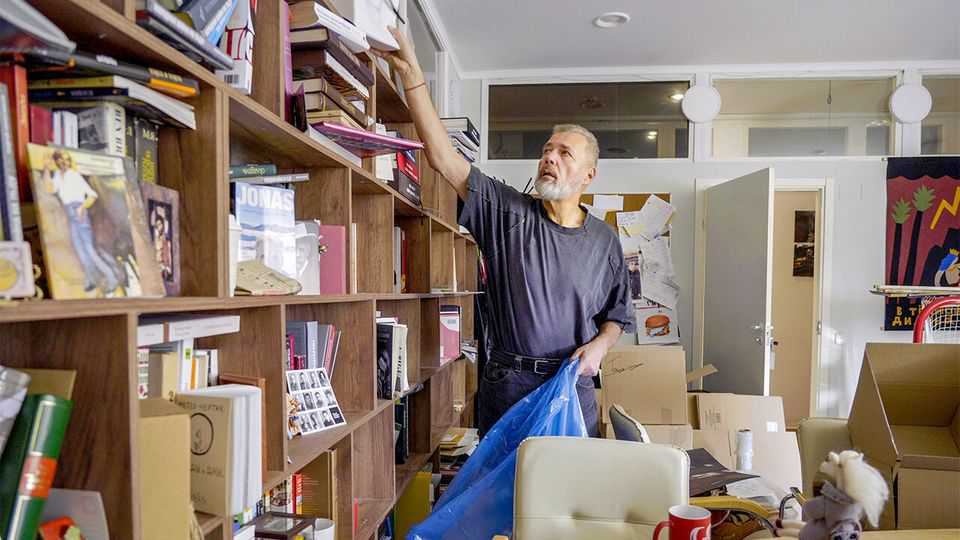

The Kremlin is shutting down Russia’s last free newspaper
Novaya Gazeta is closing after being placed on a state enemies list

Oct 29th 2026
A large modernist building in the heart of Moscow, a former printing press, with a modest nameplate: Novaya Gazeta. Journalists packing up books, belongings, memories. The rustle of cardboard and screech of packing tape. Boxes piled in the newsroom, under a street sign: “Politkovskaya Square”, named after Anna Politkovskaya, a renowned reporter for the newspaper, killed 20 years ago this month.
A young staff member sits down next to others taking a break, just to spend a little more time with colleagues. A trolley rolls down the corridor, carrying photographic prints. “It’s as if my whole life has gone by,” says the newspaper’s accountant. A crestfallen camerawoman records the final days of the last liberal media outlet in Russia.
Dmitry Muratov (pictured), Novaya Gazeta’s publisher and a Nobel peace-prize laureate, was on his way to Paris on October 19th to commemorate Politkovskaya’s murder when he learned the paper was being evicted from the building it had occupied for three decades. Its financial channels would be blocked, thanks to being branded a “foreign agent”. Next day he learned that Sergei Sokolov, the editor-in-chief, had been detained and questioned.
On October 26th Mr Muratov and Mr Sokolov gathered the paper’s remaining staff in the basement of the building next door, telling them to leave their phones outside. The previous night someone had broken into the newspaper’s offices, so it was unsafe to talk there. It was a sign of escalation, Mr Muratov explained. They might be declared an extremist organisation and their “members” arrested. The staff agreed it was time to close down the newspaper launched in 1993, the year Russia adopted its post-Soviet constitution. “We haven’t died, they’ve killed us—along with the constitution,” says Mr Muratov. “You can only laugh at Article 29 of the constitution: ‘Censorship is prohibited’.”
The closure of an independent anti-war newspaper in a country run by a militaristic dictatorship was hardly a surprise. What was astonishing was that it managed to carry on for nearly five years after Vladimir Putin launched his full-scale invasion of Ukraine and isolated Russia from the West. Its licence had been revoked and its website blocked, but it continued reporting, finding ever more ingenious ways to reach readers.
Novaya Gazeta's journalists had been exposing the state’s violence against its own people since the war in Chechnya in the late 1990s, which secured Mr Putin’s grip on power. Six of its journalists had been killed, including Politkovskaya. “I have it in for Putin,” she wrote in 2004, “because of his cynicism...because of endless war…because of lies.” Russia was heading towards fascism, she warned.
On October 7th 2006, Mr Putin’s birthday, she was gunned down entering her apartment block. War was bound to follow sooner or later, says Mr Muratov: “When people are treated like dust and institutions are destroyed, violence inevitably spills beyond our borders.”
It was Novaya Gazeta that revealed that the regular Russian army, not rogue separatists, were fighting in Donbas in 2014. The paper was first to report that the Wagner mercenary group was controlled by Evgeny Prigozhin, who later led a mutiny against Mr Putin and died soon after in a plane crash. In 2018 Prighozhin had funeral wreaths and severed rams’ heads sent to the newspaper’s offices.
The day after Mr Putin ordered the invasion of Ukraine, Novaya Gazeta came out in both Russian and Ukrainian with the headline “Russia. Bombs. Ukraine.” Days later, after the Kremlin criminalised the word “war” and imposed de facto military censorship, the newspaper put out an edition with the headline “No Words” on the front page, followed by blank sheets of paper. When distributors stopped delivering it to newsstands, readers came to its newsroom and bought up the entire run.
After the invasion, two-thirds of the newspaper’s editorial staff moved to Latvia and launched Novaya Gazeta Europe. Mr Muratov and about 30 others decided to stay in Moscow. Unable to cover the war in Ukraine, they reported on its consequences in Russia: political prisoners, economic deterioration, psychological trauma and censorship. Some young journalists joined up. “Give me a job,” said one young woman when she applied. “Any subject, anything—I just need a place where I can say out loud that I’m against it.”
The newspaper provided comfort and dignity to those who opposed the war but did not want to leave Russia. Ordinary Muscovites went there in order not to feel alone. “It was a place where you could feel as though you were in a normal world, one where criminals are not hailed as heroes,” one reporter says. But even as Mr Putin escalates his attacks on Ukrainian cities, he is demolishing the few remaining free public spaces inside Russia.
Novaya Gazeta “was our city”, says Mr Muratov. “They’ve destroyed this city, and we’re leaving. But we are not leaving our work.” He will donate many of the newspaper’s artefacts to its readers, or “accomplices”, as he calls them. On October 29th, the day of remembrance of the victims of Stalinist repression, the journalists began reading out a long list of current political prisoners. A stone from Solovetsky island, the site of one of the first gulag camps, has been placed in “Anna’s garden”, a patch of green in front of the building which they have planted in Politkovskaya’s memory.■